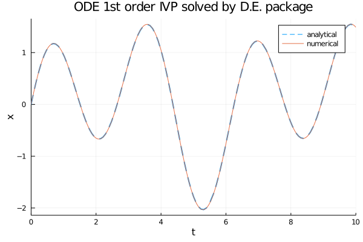

Risolutori di equazioni differenziali ordinarie in Julia
Questo post mostra l'utilizzo dei risolutori di equazioni differenziali ordinarie (abbreviato ODE per Ordinary Differential Equation)
implementati dal package nativo DifferentialEquations.jl dell'ecosistema di Julia.
Le tecniche di risoluzione qui mostrate sono tecniche numeriche e non analitiche, in quanto questo sito si occupa di computazione.
Inoltre questo post è pubblicato sotto la categoria delle reti neurali: anche se le tecniche qui mostrate
non adoperano tecnologie di deep learning, il suo scopo è quello essere propedeudico all'argomento sulla relazione tra le reti neurali e le equazioni differenziali.
Il post estende la Stele di Rosetta iniziata dal post Risolutori di equazioni differenziali ordinarie in Python
in quanto presenta gli stessi tre problemi lì presentali (e lì risolti in Python) e mostra come gli stessi problemi sono risolti qui in Julia.
I tre problemi sono una equazione del primo ordine, un sistema di due equazioni del primo ordine e una equazione del secondo ordine ciascuno con le proprie condizioni iniziali
(o condizioni di Cauchy, abbreviato IVP per Initial Value Problem) e di seguito le loro soluzioni.
Di ciascun problema è nota anche la soluzione analitica e questo permette di confrontare la qualità delle soluzioni numeriche ottenute.
Tutti i vari frammenti di codice descritti in questo post richiedono la versione 1.5.3 di Julia e i seguenti package: DifferentialEquations, StaticArrays e Plots.
Per ottenere il codice si veda il paragrafo Download del codice completo in fondo a questo post.
Convenzioni
In questo post le convenzioni adoperate sono le seguenti:
- $t$ è la variabile indipendente
- $x$ è la funzione incognita
- $y$ è la seconda funzione incognita nel caso dei sistemi di due equazioni
- $x$ e $y$ sono da intendersi funzioni di $t$, quindi $x=x(t)$ e $y=y(t)$, ma l'uso di questa notazione compatta, oltre ad avere una maggiore leggibilità a livello matematico rende più agevole la "traduzione" in codice dell'equazione
- $x'$ è la derivata prima di x rispetto a $t$ e naturalmente $y'$ è la derivata prima di y rispetto a $t$
- $x''$ è la derivata seconda di x rispetto a $t$ e naturalmente $y''$ è la derivata seconda di y rispetto a $t$
ODE del primo ordine con IVP
Sia dato il seguente problema di Cauchy:
$$ \begin{equation}
\begin{cases}
x'+x=\sin t + 3 \cos 2t
\\
x(0)=0
\end{cases}
\end{equation} $$
la cui soluzione analitica è:
$$ x(t) = \frac{1}{2} \sin t − \frac{1}{2} \cos t + \frac{3}{5} \cos 2t + \frac{6}{5} \sin 2t − \frac{1}{10}e^{-t} $$
verificabile online tramite Wolfram Alpha.
Le implementazioni dei risoluti qui di seguito richiedono che l'equazione differenziale sia scritta in forma esplicita nella forma $x'=F(x,t)$
e quindi diventa:
$$ x'=\sin t + 3 \cos 2t - x$$
Soluzione con package DifferentialEquations.jl
DifferentialEquations.jl utilizza la classe ODEProblem
e la funzione solve
per risolvere numericamente una equazione differenziale ordinaria del primo ordine con valore iniziale.
La forma esplicita dell'equazione di cui sopra in Julia con DifferentialEquations si implementa così:
ode_fn(x,p,t) = sin(t) + 3.0 * cos(2.0 * t) - xQui di seguito un esempio di codice Julia che confronta la soluzione analitica con quella numerica ottenuta tramite
ODEProblem e solve:
using DifferentialEquations
using Plots
ode_fn(x,p,t) = sin(t) + 3.0 * cos(2.0 * t) - x
an_sol(t) = (1.0/2.0) * sin(t) - (1.0/2.0) * cos(t) +
(3.0/5.0) * cos(2.0*t) + (6.0/5.0) * sin(2.0*t) -
(1.0/10.0) * exp(-t)
t_begin=0.0
t_end=10.0
tspan = (t_begin,t_end)
x_init=0.0
prob = ODEProblem(ode_fn, x_init, tspan)
num_sol = solve(prob, Tsit5(), reltol=1e-8, abstol=1e-8)
plot(num_sol.t, an_sol.(num_sol.t),
linewidth=2, ls=:dash,
title="ODE 1st order IVP solved by D.E. package",
xaxis="t", yaxis="x",
label="analytical",
legend=true)
plot!(num_sol,
linewidth=1,
label="numerical")

Comparazione della soluzione analitica con la soluzione numerica ottenuta tramite
ODEProblem e solve.Sistema di due ODE del primo ordine con IVP
Sia dato il seguente sistema di due equazioni differenziali ordinarie con valori iniziali:
$$ \begin{equation}
\begin{cases}
x' + x − y = 0
\\
y' - 4x + y = 0
\\
x(0)=2
\\
y(0)=0
\end{cases}
\end{equation} $$
la cui soluzione analitica è:
$$ \begin{equation}
\begin{cases}
x(t) = e^t + e^{-3 t}
\\
y(t) = 2 e^t - 2 e^{-3 t}
\end{cases}
\end{equation} $$
verificabile online tramite Wolfram Alpha.
Le implementazioni dei risoluti qui di seguito richiedono che le equazioni differenziali siano scritta in forma esplicita nelle forme $x'=F_1(x,y,t)$ e $y'=F_2(x,y,t)$
e quindi le due equazioni diventano:
$$ \begin{equation}
\begin{cases}
x' = y - x
\\
y' = 4x - y
\end{cases}
\end{equation} $$
e in forma matriciale:
$$\left[\begin{matrix} x' \\ y' \end{matrix} \right] = \left[\begin{matrix} -1 & 1 \\ 4 & -1 \end{matrix} \right] \left[\begin{matrix} x \\ y \end{matrix} \right] $$
Soluzione con package DifferentialEquations.jl
DifferentialEquations.jl utilizza la classe ODEProblem
e la funzione solve
per risolvere numericamente un sistema di equazioni differenziali ordinarie del primo ordine con valori iniziali.
La forma esplicita della coppia di equazioni di cui sopra in Julia con DifferentialEquations si implementa così:
function ode_fn(du,u,p,t)
x, y = u
du[1] = y - x
du[2] = 4.0 * x - y
endAlternativamente, il sistema rappresentato in forma matriciale in Julia con DifferentialEquations si implementa così:
A = @SMatrix [-1.0 1.0
4.0 -1.0]
function ode_fn(du,u,p,t)
du[[true, true]] = A * u
endSi nota che il secondo argomento è un array di dimensione due, ovvero tante quanto il numero delle funzioni incognite.
Qui di seguito un esempio di codice Julia che confronta la soluzione analitica del sistema con quella numerica ottenuta tramite
ODEProblem e solve:
using StaticArrays
using DifferentialEquations
using Plots
A = @SMatrix [-1.0 1.0
4.0 -1.0]
function ode_fn(du,u,p,t)
du[[true, true]] = A * u
end
an_sol_x(t) = exp(t) + exp(-3.0 * t)
an_sol_y(t) = 2.0 * exp(t) - 2.0 * exp(-3.0 * t)
t_begin=0.0
t_end=5
tspan = (t_begin,t_end)
x_init=2.0
y_init=0.0
prob = ODEProblem(ode_fn, [x_init, y_init], tspan)
num_sol = solve(prob, Tsit5(), reltol=1e-8, abstol=1e-8)
x_num_sol = [u[1] for u in num_sol.u]
y_num_sol = [u[2] for u in num_sol.u]
plot(num_sol.t, an_sol_x.(num_sol.t),
linewidth=2, ls=:dash,
title="System of 2 ODEs 1st order IVP solved by D.E. package",
xaxis="t",
label="analytical x",
legend=true)
plot!(num_sol.t, an_sol_y.(num_sol.t),
linewidth=2, ls=:dash,
label="analytical y",
legend=true)
plot!(num_sol.t, x_num_sol,
linewidth=1,
label="numerical x")
plot!(num_sol.t, y_num_sol,
linewidth=1,
label="numerical y")
Qui il link per la variante matriciale su GitHub.

Comparazione della soluzione analitica del sistema con la soluzione numerica ottenuta tramite
ODEProblem e solve.ODE del secondo ordine con IVP
Sia dato il seguente problema di Cauchy:
$$ \begin{equation}
\begin{cases}
x'' + x' + 2x = 0
\\
x(0)=1
\\
x'(0)=0
\end{cases}
\end{equation} $$
la cui soluzione analitica è:
$$ x(t) = e^{\frac{-t}{2}} (\cos {\sqrt{7} \frac{t}{2}} + \frac{\sin {\sqrt{7} \frac{t}{2}}}{\sqrt{7}}) $$
verificabile online tramite Wolfram Alpha.
Le implementazioni dei risoluti qui di seguito richiedono che l'equazione differenziale del secondo ordine
sia scritta in forma esplicita come sistema di equazioni del primo ordine nel seguente modo:
$$ \begin{equation}
\begin{cases}
y=x'
\\
y'=F(x, y, t)
\end{cases}
\end{equation} $$
e quindi il problema di Cauchy iniziale si scrive equivalentemente nel seguente modo:
$$ \begin{equation}
\begin{cases}
y = x'
\\
y'= -y - 2x = 0
\\
x(0)=1
\\
y(0)=0
\end{cases}
\end{equation} $$
Soluzione con package DifferentialEquations.jl
DifferentialEquations.jl utilizza la classe SecondOrderODEProblem
e la funzione solve
per risolvere numericamente una equazione differenziale ordinaria del secondo ordine con valori iniziali.
La forma esplicita dell'equazione di cui sopra in Julia con DifferentialEquations si implementa così:
function ode_fn(dx,x,p,t)
-dx -2.0 * x
endQui di seguito un esempio di codice Julia che confronta la soluzione analitica del sistema con quella numerica ottenuta tramite
SecondOrderODEProblem e solve:
using DifferentialEquations
using Plots
function ode_fn(dx,x,p,t)
-dx -2.0 * x
end
an_sol(t) = exp(-t/2.0) *
(cos(sqrt(7.0) * t / 2.0) + sin(sqrt(7.0) * t / 2.0)/sqrt(7.0))
t_begin=0.0
t_end=12.0
tspan = (t_begin,t_end)
x_init=1.0
dxdt_init=0.0
prob = SecondOrderODEProblem(ode_fn, dxdt_init, x_init, tspan)
num_sol = solve(prob, Tsit5(), reltol=1e-8, abstol=1e-8)
x_num_sol = [u[2] for u in num_sol.u]
plot(num_sol.t, an_sol.(num_sol.t),
linewidth=2, ls=:dash,
title="ODE 2nd order IVP solved by D.E. package",
xaxis="t", yaxis="x",
label="analytical",
legend=true)
plot!(num_sol.t, x_num_sol,
linewidth=1,
label="numerical")

Comparazione della soluzione analitica dell'equazione del secondo ordine con la soluzione numerica ottenuta tramite
SecondOrderODEProblem e solve.Download del codice completo
Il codice completo è disponibile su GitHub.
Questo materiale è distribuito su licenza MIT; sentiti libero di usare, condividere, "forkare" e adattare tale materiale come credi.
Sentiti anche libero di pubblicare pull-request e bug-report su questo repository di GitHub oppure di contattarmi sui miei canali social disponibili nell'angolo in alto a destra di questa pagina.